、 、
译者
@SeanCheney ：
击球手击出垒球
在本章中
-
不稳定梯度
（ ， ） ， ， 。 -
有限的短期记忆
， 。
RNN 不是唯一能处理序列数据的神经网络
循环神经元和层
到目前为止tx[t]以及它自己的前一时间步长y[t - 1]的输出
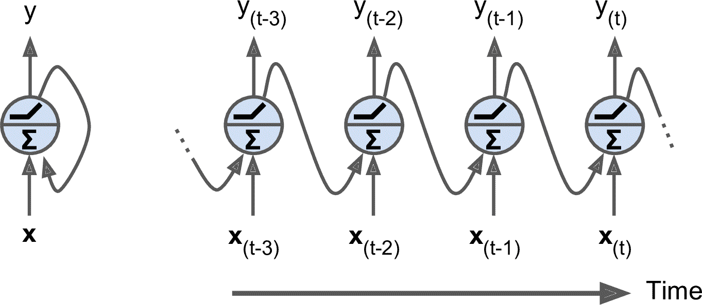
图 15-1 循环神经网络
你可以轻松创建一个循环神经元层tx[t]和前一个时间步y[t - 1]的输出向量
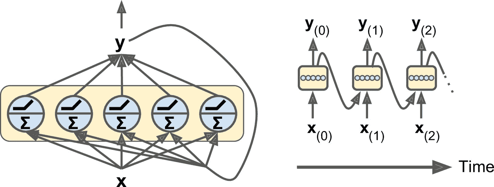
图 15-2 一层循环神经元
每个循环神经元有两组权重x[t]y[t - 1]的输出w[x]和w[y]W[x]和W[y]b是偏差项φ(·)是激活函数
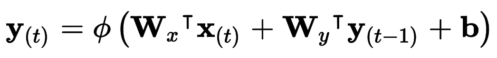
公式 15-1 单个实例的循环神经元层的输出
就像前馈神经网络一样t放到输入矩阵X[t]中
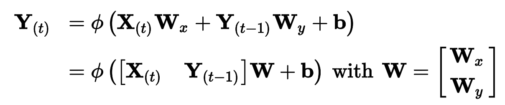
公式 15-2 小批次实例的循环层输出
在这个公式中
Y[t]是m × n_neurons矩阵， t的层输出（ m是小批次中的实例数， n_neurons是神经元数） 。 X[t]是m × n_inputs矩阵， （ n_inputs是输入特征的数量） 。 W[x]是n_inputs × n_neurons矩阵， 。 W[y]是n_neurons × n_neurons矩阵， 。 b是大小为n_neurons的向量， 。 - 权重矩阵
W[x]和W[y]通常纵向连接成一个权重矩阵W， (n_inputs + n_neurons) × n_neurons（ ）
注意Y[t]是X[t]和Y[t - 1]的函数Y[t - 1]是X[t - 1]和Y[t - 2]的函数Y[t]是从时间t = 0开始的所有输入X[0]X[1]X[t]t = 0
记忆单元
由于时间t的循环神经元的输出
一般情况下t的单元状态h[t]h代表h[t] = f(h[t - 1], x[t])t的输出y[t]
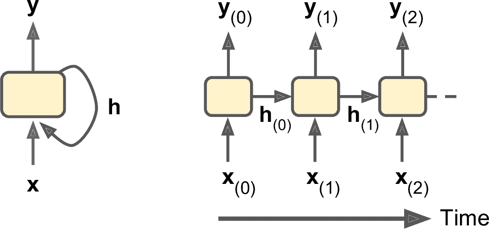
图 15-3 单元的隐藏状态和输出可能不同
输入和输出序列
RNN 可以同时输入序列并输出序列N天价格N - 1天前到明天
或者-1 [讨厌]到+1 [喜欢]
相反
最后
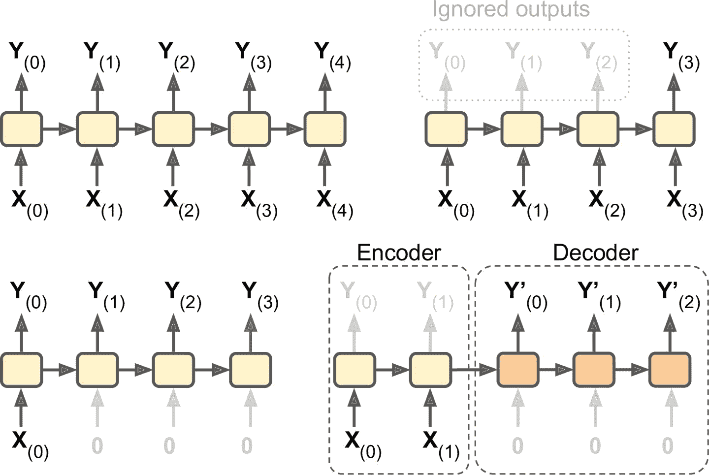
图 15-4 序列到序列
训练 RNN
训练 RNN 诀窍是在时间上展开
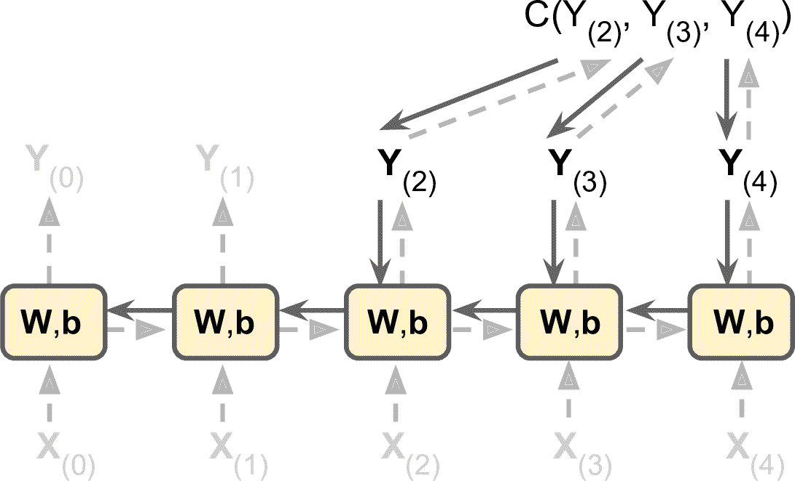
图 15-5 随时间反向传播
就像在正常的反向传播中一样C(Y[0], Y[1], …Y[T]])评估输出序列T是最大时间步Y[2]Y[3]和Y[4]Y[0]和Y[1]W和b
幸好tf.keras处理了这些麻烦
预测时间序列
假设你在研究网站每小时的活跃用户数X表示
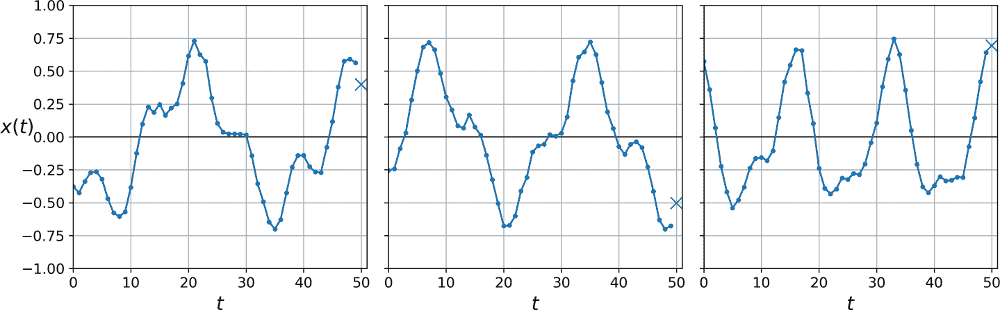
图 15-6 时间序列预测
简单起见generate_time_series()生成的时间序列
def generate_time_series(batch_size, n_steps):
freq1, freq2, offsets1, offsets2 = np.random.rand(4, batch_size, 1)
time = np.linspace(0, 1, n_steps)
series = 0.5 * np.sin((time - offsets1) * (freq1 * 10 + 10)) # wave 1
series += 0.2 * np.sin((time - offsets2) * (freq2 * 20 + 20)) # + wave 2
series += 0.1 * (np.random.rand(batch_size, n_steps) - 0.5) # + noise
return series[..., np.newaxis].astype(np.float32)
这个函数可以根据要求创建出时间序列batch_size参数n_steps
笔记
当处理时间序列时 ： 和其它类型的时间序列 （ ） 输入特征通常用 3D 数组来表示 ， 其形状是 ， [批次大小, 时间步数, 维度]对于单变量时间序列 ， 其维度是 1 ， 多变量时间序列的维度是其维度数 ， 。
用这个函数来创建训练集
n_steps = 50
series = generate_time_series(10000, n_steps + 1)
X_train, y_train = series[:7000, :n_steps], series[:7000, -1]
X_valid, y_valid = series[7000:9000, :n_steps], series[7000:9000, -1]
X_test, y_test = series[9000:, :n_steps], series[9000:, -1]
X_train包含 7000 个时间序列X_valid有 2000 个X_test有 1000 个y_train的形状是[7000, 1]
基线模型
使用 RNN 之前
>>> y_pred = X_valid[:, -1]
>>> np.mean(keras.losses.mean_squared_error(y_valid, y_pred))
0.020211367
另一个简单的方法是使用全连接网络Flatten层
model = keras.models.Sequential([
keras.layers.Flatten(input_shape=[50, 1]),
keras.layers.Dense(1)
])
使用 MSE 损失
实现一个简单 RNN
搭建一个简单 RNN 模型
model = keras.models.Sequential([
keras.layers.SimpleRNN(1, input_shape=[None, 1])
])
这是能实现的最简单的 RNNNoneSimpleRNN使用双曲正切激活函数h[init]设为 0x[0]一起传递给神经元y[0]h[0]x[1]y[49]
笔记
默认时 ： Keras 的循环层只返回最后一个输出 ， 要让其返回每个时间步的输出 。 必须设置 ， return_sequences=True。
用这个模型编译
趋势和季节性
还有其它预测时间序列的模型
比如权重移动平均模型或自动回归集成移动平均 ， ARIMA （ 模型 ） 某些模型需要先移出趋势和季节性 。 例如 。 如果要研究网站的活跃用户数 ， 它每月会增长 10% ， 就需要去掉这个趋势 ， 训练好模型之后 。 在做预测时 ， 你可以将趋势加回来做最终的预测 ， 相似的 。 如果要预测防晒霜的每月销量 ， 会观察到明显的季节性 ， 每年夏天卖的多 ： 需要将季节性从时间序列去除 。 比如计算每个时间步和前一年的差值 ， 这个方法被称为差分 （ ） 然后 。 当训练好模型 ， 做预测时 ， 可以将季节性加回来 ， 来得到最终结果 ， 。 使用 RNN 时
一般不需要做这些 ， 但在有些任务中可以提高性能 ， 因为模型不是非要学习这些趋势或季节性 ， 。
很显然
深度 RNN
将多个神经元的层堆起来
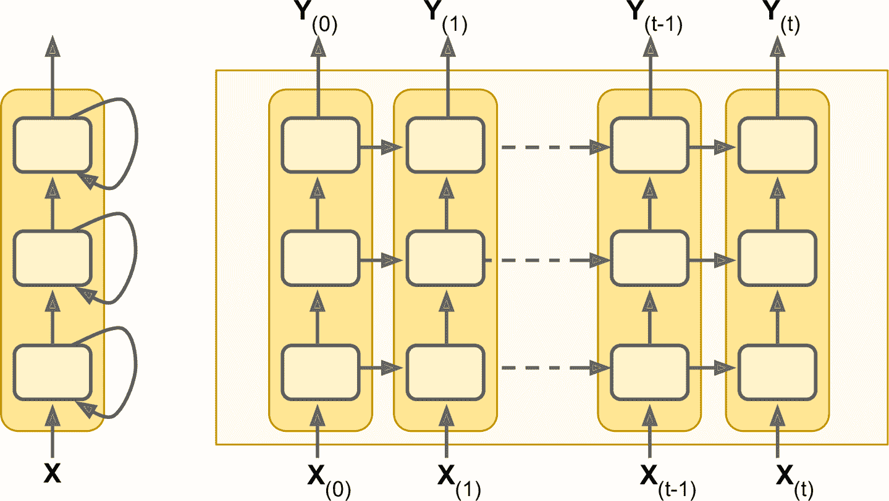
图 15-7 深度 RNN
用tf.keras实现深度 RNN 相当容易SimpleRNN层
model = keras.models.Sequential([
keras.layers.SimpleRNN(20, return_sequences=True, input_shape=[None, 1]),
keras.layers.SimpleRNN(20, return_sequences=True),
keras.layers.SimpleRNN(1)
])
警告
所有循环层一定要设置 ： return_sequences=True除了最后一层 （ 因为最后一层只关心输出 ， ） 如果没有设置 。 输出的是 2D 数组 ， 只有最终时间步的输出 （ ） 而不是 3D 数组 ， 包含所有时间步的输出 （ ） 下一个循环层就接收不到 3D 格式的序列数据 ， 。
如果对这个模型做编译
最后一层不够理想SimpleRNN层默认使用 tanh 激活函数return_sequences=True删掉
model = keras.models.Sequential([
keras.layers.SimpleRNN(20, return_sequences=True, input_shape=[None, 1]),
keras.layers.SimpleRNN(20),
keras.layers.Dense(1)
])
如果训练这个模型
提前预测几个时间步
目前为止我们只是预测下一个时间步的值
第一种方法是使用训练好的模型
series = generate_time_series(1, n_steps + 10)
X_new, Y_new = series[:, :n_steps], series[:, n_steps:]
X = X_new
for step_ahead in range(10):
y_pred_one = model.predict(X[:, step_ahead:])[:, np.newaxis, :]
X = np.concatenate([X, y_pred_one], axis=1)
Y_pred = X[:, n_steps:]
想象的到
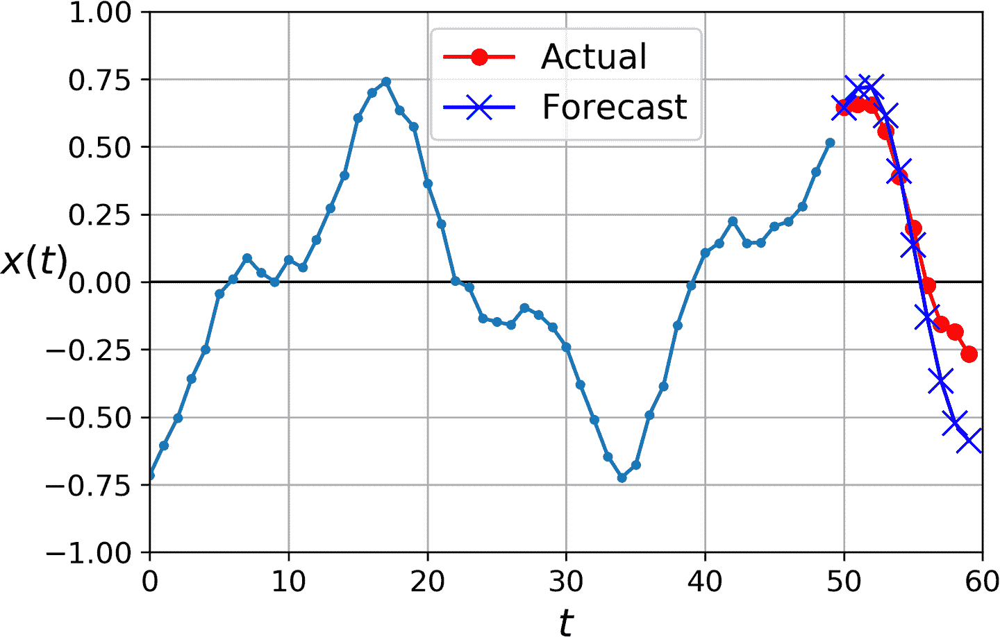
图 15-8 提前预测 10 步
第二种方法是训练一个 RNN
series = generate_time_series(10000, n_steps + 10)
X_train, Y_train = series[:7000, :n_steps], series[:7000, -10:, 0]
X_valid, Y_valid = series[7000:9000, :n_steps], series[7000:9000, -10:, 0]
X_test, Y_test = series[9000:, :n_steps], series[9000:, -10:, 0]
然后使输出层有 10 个神经元
model = keras.models.Sequential([
keras.layers.SimpleRNN(20, return_sequences=True, input_shape=[None, 1]),
keras.layers.SimpleRNN(20),
keras.layers.Dense(10)
])
训练好这个模型之后
Y_pred = model.predict(X_new)
这个模型的效果不错
更加清楚一点
Y = np.empty((10000, n_steps, 10)) # each target is a sequence of 10D vectors
for step_ahead in range(1, 10 + 1):
Y[:, :, step_ahead - 1] = series[:, step_ahead:step_ahead + n_steps, 0]
Y_train = Y[:7000]
Y_valid = Y[7000:9000]
Y_test = Y[9000:]
笔记
目标要包含出现在输入中的值 ： （ X_train和Y_train有许多重复） 听起来很奇怪 ， 这不是作弊吗 。 其实不是 ？ 在每个时间步 ： 模型只知道过去的时间步 ， 不能向前看 ， 这个模型被称为因果模型 。 。
要将模型变成序列到序列的模型return_sequences=TrueTimeDistributed层[批次大小, 时间步数, 输入维度]变形为[批次大小 × 时间步数, 输入维度]SimpleRNN有 20 个神经元[批次大小 × 时间步数, 输出维度]变形为[批次大小, 时间步数, 输出维度]
model = keras.models.Sequential([
keras.layers.SimpleRNN(20, return_sequences=True, input_shape=[None, 1]),
keras.layers.SimpleRNN(20, return_sequences=True),
keras.layers.TimeDistributed(keras.layers.Dense(10))
])
紧密层实际上是支持序列TimeDistributed(Dense(…))一样处理序列Dense(10)TimeDistributed(Dense(10))
训练时需要所有输出
def last_time_step_mse(Y_true, Y_pred):
return keras.metrics.mean_squared_error(Y_true[:, -1], Y_pred[:, -1])
optimizer = keras.optimizers.Adam(lr=0.01)
model.compile(loss="mse", optimizer=optimizer, metrics=[last_time_step_mse])
得到的 MSE 值为 0.006
提示
当预测时间序列时 ： 最好给预测加上误差条 ， 要这么做 。 一个高效的方法是用 MC 丢弃 ， 第 11 章介绍过 ， 给每个记忆单元添加一个 MC 丢弃层丢失部分输入和隐藏状态 ： 训练之后 。 要预测新的时间序列 ， 可以多次使用模型计算每一步预测值的平均值和标准差 ， 。
简单 RNN 在预测时间序列或处理其它类型序列时表现很好
处理长序列
在训练长序列的 RNN 模型时
应对不稳定梯度
很多之前讨论过的缓解不稳定梯度的技巧都可以应用在 RNN 中
另外BatchNormalization层
另一种归一化的形式效果好些
使用tf.keras在一个简单记忆单元中实现层归一化call()接收两个参数inputs和上一时间步的隐藏statesstates是一个包含一个或多个张量的列表states包含一个等于上一时间步输出的张量LSTMCell有长期状态和短期状态state_size属性和一个output_size属性SimpleRNNCell
class LNSimpleRNNCell(keras.layers.Layer):
def __init__(self, units, activation="tanh", **kwargs):
super().__init__(**kwargs)
self.state_size = units
self.output_size = units
self.simple_rnn_cell = keras.layers.SimpleRNNCell(units,
activation=None)
self.layer_norm = keras.layers.LayerNormalization()
self.activation = keras.activations.get(activation)
def call(self, inputs, states):
outputs, new_states = self.simple_rnn_cell(inputs, states)
norm_outputs = self.activation(self.layer_norm(outputs))
return norm_outputs, [norm_outputs]
代码不难LNSimpleRNNCell继承自keras.layers.Layerstate_size 和output_size属性SimpleRNNCellLayerNormalization层call()方法先应用简单 RNN 单元SimpleRNNCell中new_states[0]等于outputscall()中忽略new_statescall()应用层归一化keras.layers.RNN层
model = keras.models.Sequential([
keras.layers.RNN(LNSimpleRNNCell(20), return_sequences=True,
input_shape=[None, 1]),
keras.layers.RNN(LNSimpleRNNCell(20), return_sequences=True),
keras.layers.TimeDistributed(keras.layers.Dense(10))
])
相似地keras.layers.RNNdropout超参数和一个recurrent_dropout超参数
有了这些方法
处理短期记忆问题
由于数据在 RNN 中流动时会经历转换
LSTM 单元
长短时记忆单元在 1997 年由 Sepp Hochreiter 和 Jürgen Schmidhuber 首次提出SimpleRNN层LSTM层
model = keras.models.Sequential([
keras.layers.LSTM(20, return_sequences=True, input_shape=[None, 1]),
keras.layers.LSTM(20, return_sequences=True),
keras.layers.TimeDistributed(keras.layers.Dense(10))
])
或者keras.layers.RNN layerLSTMCell参数
model = keras.models.Sequential([
keras.layers.RNN(keras.layers.LSTMCell(20), return_sequences=True,
input_shape=[None, 1]),
keras.layers.RNN(keras.layers.LSTMCell(20), return_sequences=True),
keras.layers.TimeDistributed(keras.layers.Dense(10))
])
但是RNN大多用来自定义层
LSTM 单元的工作机制是什么呢
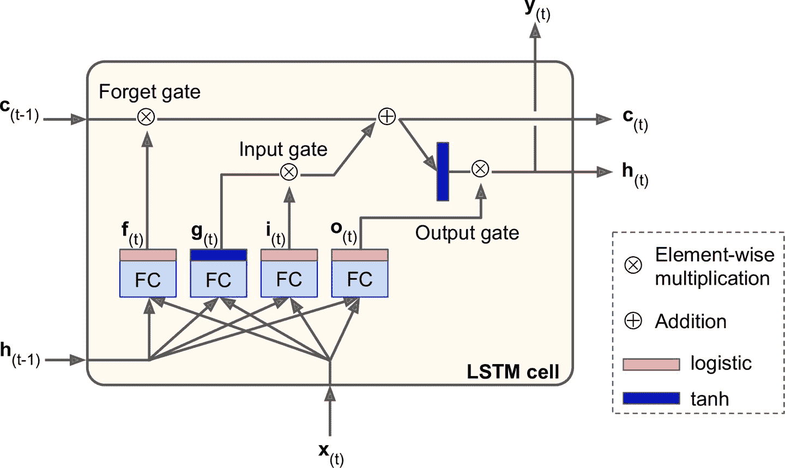
图 15-9 LSTM 单元
如果不观察黑箱的内部h[t]和c[t]c代表 cellh[t]是短期记忆状态c[t]是长期记忆状态
现在打开黑箱c[t-1]从左向右在网络中传播c[t]不经任何转换直接输出h[t]y[t]
首先x[t]和前一时刻的短时状态h[t-1]作为输入
-
输出
g[t]的层是主要层。 x[t]和前一时刻的短时状态h[t-1]。 ， h[t]和y[t]。 ， ， （ ） 。 -
其它三个全连接层被是门控制器
（ ） 。 ， 。 ， ， ， 。 ： -
遗忘门
（ f[t]控制） ； -
输入门
（ i[t]控制） g[t]应该被添加到长时状态中。 -
输出门
（ o[t]控制） h[t]和y[t]。
-
总而言之
公式 15-3 总结了如何计算单元的长时状态
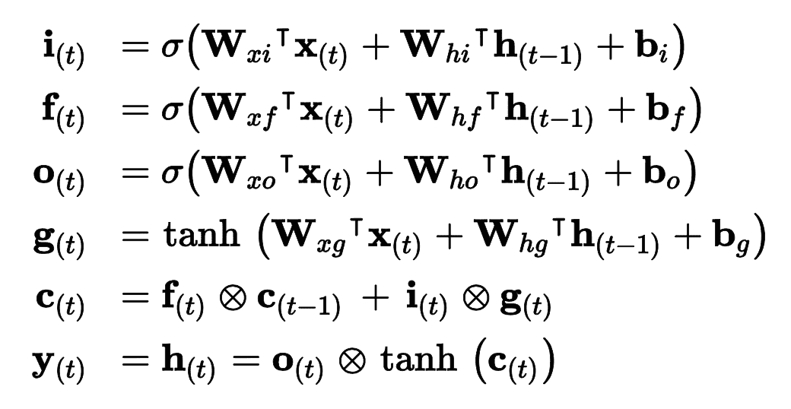
公式 15-3 LSTM 计算
在这个公式中
-
W[xi]， W[xf]， W[xo]， W[xg]是四个全连接层连接输入向量X[t]的权重。 -
W[hi]， W[hf]， W[ho]， W[hg]是四个全连接层连接上一时刻的短时状态h[t - 1]的权重。 -
b[i]， b[f]， b[o]， b[g]是全连接层的四个偏置项。 b[f]初始化为全 1 向量， 。 ， 。
窥孔连接
在基本 LSTM 单元中x[t]和前一时刻的短时状态h[t - 1]c[t - 1]输入给遗忘门和输入门c[t]输入给输出门
Keras 中LSTM层基于keras.layers.LSTMCell单元tf.keras.experimental.PeepholeLSTMCell支持keras.layers.RNN层PeepholeLSTMCell
LSTM 有多种其它变体
GRU 单元
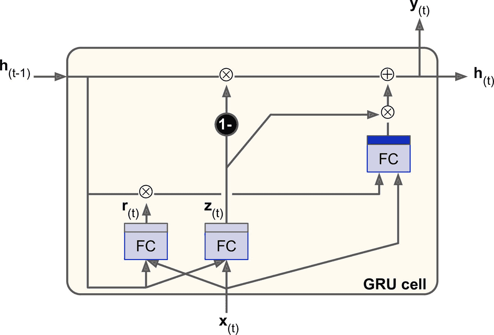
图 15-10 GRU 单元
门控循环单元
GRU 单元是 LSTM 单元的简化版本
-
长时状态和短时状态合并为一个向量
h[t]。 -
用一个门控制器
z[t]控制遗忘门和输入门。 ， （ = 1） ， （ 1 - 1 = 0） 。 ， 。 ， ， 。 。 -
GRU 单元取消了输出门
， 。 ， r[t]来控制前一状态的哪些部分呈现给主层g[t]。
公式 15-4 总结了如何计算单元对单个实例在每个时间步的状态
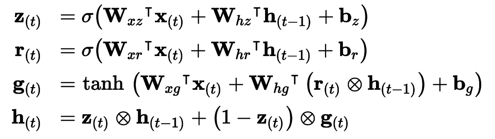
公式 15-4 GRU 计算
Keras 提供了keras.layers.GRU层keras.layers.GRUCell记忆单元SimpleRNN或LSTM替换为GRU
LSTM 和 GRU 是 RNN 取得成功的主要原因之一
使用 1D 卷积层处理序列
在第 14 章中"valid"填充
model = keras.models.Sequential([
keras.layers.Conv1D(filters=20, kernel_size=4, strides=2, padding="valid",
input_shape=[None, 1]),
keras.layers.GRU(20, return_sequences=True),
keras.layers.GRU(20, return_sequences=True),
keras.layers.TimeDistributed(keras.layers.Dense(10))
])
model.compile(loss="mse", optimizer="adam", metrics=[last_time_step_mse])
history = model.fit(X_train, Y_train[:, 3::2], epochs=20,
validation_data=(X_valid, Y_valid[:, 3::2]))
如果训练并评估这个模型
WaveNet
在一篇 2016 年的论文中
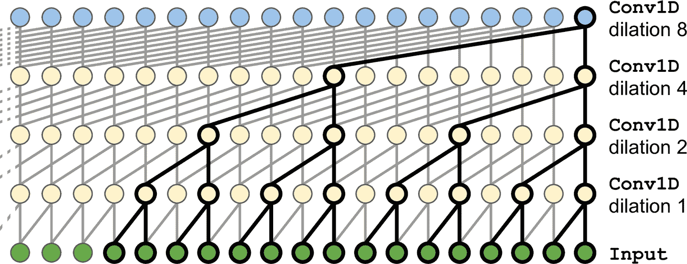
图 15-11 WaveNet 架构
在 WaveNet 论文中
model = keras.models.Sequential()
model.add(keras.layers.InputLayer(input_shape=[None, 1]))
for rate in (1, 2, 4, 8) * 2:
model.add(keras.layers.Conv1D(filters=20, kernel_size=2, padding="causal",
activation="relu", dilation_rate=rate))
model.add(keras.layers.Conv1D(filters=10, kernel_size=1))
model.compile(loss="mse", optimizer="adam", metrics=[last_time_step_mse])
history = model.fit(X_train, Y_train, epochs=20,
validation_data=(X_valid, Y_valid))
Sequential模型开头是一个输入层input_shape简单的多"causal"填充
最后两个模型的序列预测结果最好
第 16 章
练习
-
你能说出序列到序列 RNN 的几个应用吗
？ ？ ？ -
RNN 层的输入要有多少维
？ ？ ？ -
如果搭建深度序列到序列 RNN
， return_sequences=True？ ？ -
假如有一个每日单变量时间序列
， 。 ？ -
训练 RNN 的困难是什么
？ ？ -
画出 LSTM 单元的架构图
？ -
为什么在 RNN 中使用 1D 卷积层
？ -
哪种神经网络架构可以用来分类视频
？ -
为 SketchRNN 数据集
（ ） ， 。 -
下载 Bach chorales 数据集
， 。 。 ， ， （ ， ） 。 （ ） ， 、 、 。 ， ： ， ， ， 。 ， 。
参考答案见附录 A